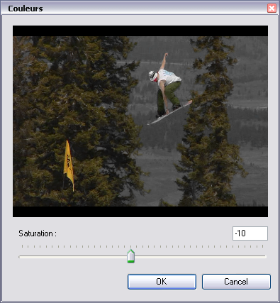
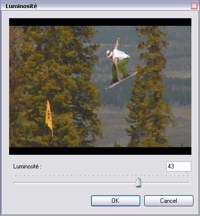
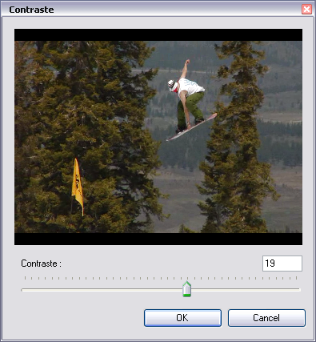

Improving Image
When filming conditions are not optimal, you can face bad image quality, global tint or low contrast...
In Analysis mode (see Breaking Down Technique) Image menu commands are enabled.
You can then adjust all images and try to improve readability of observed motion.
You can adjust the following : Color Saturation, Luminosity, Contrast, Sharpness.
1. Colors
If the image is too vivid or saturated, use the Colors... dialog box.

2. Luminosity
If the image is too dark or too much exposed, use the Luminosity... dialog box.

3. Contrast
If image seems dim or faint, use the Contrast... dialog box.

4. Sharpness
If the image seems slightly fuzzy or not well defined, use the Sharpness... dialog box.